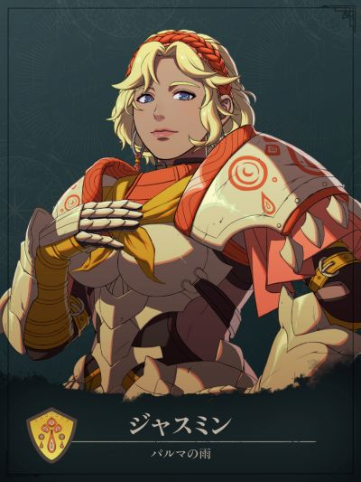

COMPANION DOSSIER
贾斯敏
ジャスミン · 无派系 / 其他
检索别名：贾斯敏
喜欢什么，送什么
原手册尚未收录明确的推荐礼物。
查看送礼原文与例外 →第一部 · 各路线加入条件
- 凯伊线
- 1S / 8R ・2000G
- 迪托利希线
- 3S / 9R ・5000G
- 赛奥朵拉线
- 3S / 8R ・5000G
- 蕾达线
- 2S / 4R ・500G
S = 支援等级 · R = 名声等级 · — = 无法招募
查看招募原文与附加说明 →交涉要准备什么
本批尚未独立核对该角色交涉流程。先看上方原表的物品、金钱、外传与 S／R 门槛；没有写出明细不代表无条件加入。
怎么养，怎么转职
编辑培养建议
重装守点／后攻反击 · 第三部可选战象
- 前期
- 完成本线招募后，先用现有士兵或重装步兵承担物理守点。斧或枪选一项主练并补重装，不必同时三修。个人技能「熟练反击术」只在后攻战斗时提供命中+20；按敌方射程选能反击的武器，并留好治疗覆盖。
- 中期
- 省训练的方向是重装步兵 → 巨型重甲兵，延续擅长的武器与重装。巨型重甲兵在后攻战斗中有耐物+5，精通「集中反击」提供后攻命中+10。未到上级开放或票证不足时，继续用现职守窄口，不为赶转职额外刷剑术、飞行等不擅长技能。
- 后期目标
- 第三部可沿重装主轴转要塞，继续守点，后攻耐物提升至+7。若更需要承受攻击的诱敌单位，可另补马术走战象兵：骑兵状态下受到攻击的伤害减半，但不能回避，且不能装备武器；原先的枪斧配置不能原样沿用。它虽属上级，也要第三部第1区分结束后才开放，不是第一部过渡职。
- 考试与解锁
- 巨型重甲兵按重装D＋斧或枪B、要塞按重装C＋斧或枪A备考；上级票证帝都标价3000G，第三部フィーナの漁村市场的最上级票证标价8000G，另核当前开放与通过率。战象兵按马术C准备，另用专用战象兵考试票证，并备好象坐骑，可由「戦象乗りの絆」取得。入队兵种随进度变化；早期兵种先核对存档里的考试条件。
- 取舍与限制
- 学会「怒涛反击+」后，后攻战斗另有攻击力+3、必杀+10，不能视为先手常驻增伤或必杀保证。速度与魔防偏弱，接敌前核算追击、法术、特效和多敌累计伤害；命中高不等于能击杀。蕾达线2S／4R及500G较省招募成本，但巴卡尼亚已够用时先养现成前排；迪线已有艾丝梅拉尔达、赛线已有托比亚斯时，也先看第二守点位的实际缺口。
这些是阶段性培养方向，并非必须逐级转职的固定链。适用难度及版本未做独立实测；优先满足当前队伍缺口。
GameWith · 贾斯敏 ↗Game8 · 贾斯敏 ↗AppMedia · 贾斯敏 ↗GameWith · 巨型重甲兵 ↗Game8 · 巨型重甲兵 ↗GameWith · 要塞 ↗Game8 · 要塞 ↗Game8 · 战象兵 ↗GameWith · 战象兵 ↗GameWith · 战象兵考试票证 ↗GameWith · 上级考试票证 ↗GameWith · 最上级考试票证 ↗ちゅこ · 凯伊线招募实录 ↗あゆりん · 凯伊篇第7章至通关实录 ↗GameWith · 萨拉米斯战象 ↗Fire Emblem fun · 技能数据库 ↗GameCap · 第三部商店 ↗攻略来源交叉参考 · 未作游戏内实测
本次新增条目经过来源页面核对，未逐项游戏内实测。没有补充明细的“交涉”仍待核验，不表示没有额外要求。